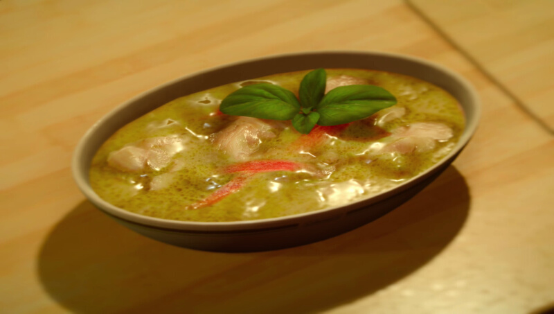

Green Soup Curry
Active cooking time: 40-60 mins | Total cooking time: 40-60 mins | Serves 2-6

As Prompto would be happy to tell you, this Thai-inspired soup is worth
every last ingredient!
Ingredients for green curry paste
- 4.5 tbsp coriander seeds (25g)
- 1 tbsp mace powder or ginger powder (5g)
- 2 tbsp cumin seeds (12g)
- 1 tsp nutmeg powder (2.5g)
- 5 garlic cloves
- 5 shallots
- 2 lemongrass stalks
- 3 green finger chilies (or 5 normal green chilies)
- bunch of coriander (to taste)
- 4 kaffir lime leaves
- 2 tsp galangal paste (10mL)
- 1 tsp salt (2.5g)
- 1 tbsp shrimp paste (15g)
- 4 basil leaves
How to make green curry paste
- Heat up a dry pan and put in the coriander seeds, mace, cumin
seeds, and nutmeg powder. Keep stirring to prevent mixture from
burning and sticking to the bottom of the pan.
- Stir until the mixture becomes a beautiful golden color and the
aroma of the spices is the air. Remove from the heat and set aside
to cool.
- Flatten and remove the skin from the garlic. Set aside.
- Peel the shallots and chop them into small pieces.
- To prepare the lemongrass, cut off the bulb part of the lemongrass
until you can see the purple ring inside and remove the hard outer
layer. Cut off the lower, paler area of the lemongrass and chop the
rest finely.
- Chop up the chilies and remove all the seeds (because these are
really spicy).
- Roughly chop up the coriander and the kaffir lime leaves.
- Use a pestle and mortar to grind the coriander seeds, cumin seeds,
nutmeg, and mace together. Do so by lightly but firmly tapping
down on the seeds until flattened, and then start grinding them.
Continue to pound and grind until it is a semi-fine powder. Set
aside.
- Mash the garlic into a pulp using the pestle and mortar. Add
shallots to garlic and pulp and grind as well.
- Slowly introduce the other green ingredients, including the
lemongrass, chilis, coriander, and kaffir.
- Spoon in the galangal paste and salt. Continue to grind with pestle
and mortar.
- Introduce the shrimp paste, and then the ground spices from earlier.
- Add a handful of basil leaves and crush it as well.
Ingredients for green curry soup
- 2 tbsp olive oil (30mL)
- 2 shallots
- 1.1 lbs boneless skinless chicken thighs (500g)
- 3 garlic cloves
- chicken stock
- 3-4 tbsp green curry paste (45-60mL)
- 1 tbsp fish sauce, or alternatively, soy sauce (15mL)
- 12⁄3 coconut milk (400mL)
- 1⁄2 red pepper
- 1 stalk spring onion
- 2 finger chilies (or 4 normal green chilies)
- 3 kaffir lime leaves
- 2 lemongrass bulbs
- juice from 2-3 limes
- bunch of coriander, to taste
- 2 leaves of basil, for garnish
How to make green curry soup
- Crush, peel, and finely dice garlic.
- Peel and finely dice the shallots.
- Dice the leftover lemongrass (from before).
- Dice the chilies finely.
- Finely chop the coriander.
- Crush half of the pepper and slice lengthwise for long strips of red
pepper.
- Finely slice and dice one stalk of spring onion.
- Chop 2 limes in half.
- Chop chicken thighs into bite sized chunks.
- Pour olive oil into pan and add diced shallots. Keep stirring to
ensure shallots do not burn, until browned.
- Add chicken and garlic. Cook until all sides of chicken are white.
- Pour in enough chicken stock to cover the chicken, and add green
curry paste.
- Add fish sauce and coconut milk. Stir and simmer for 7 mins. Taste
and add more green curry paste if needed.
- Add red peppers, spring onion, chili, kaffir lime leaves, and
lemongrass.
- Let cook for 3-4 minutes until the red peppers are cooked.
- Squeeze in the juice of 2 limes and mix.
- Add in coriander, stir, and simmer for 1 minute. Garnish and serve.
Effect(s)
Strength +160, HP +800, Fire Resistance +70
Source